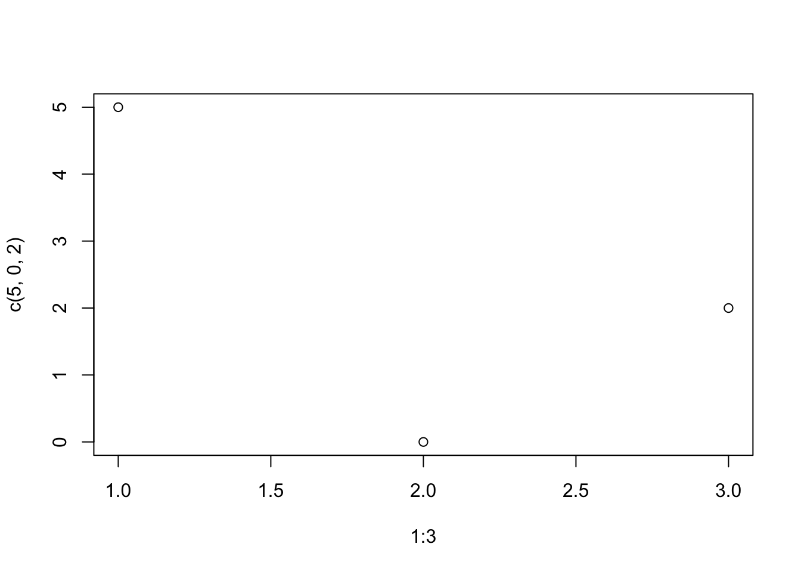
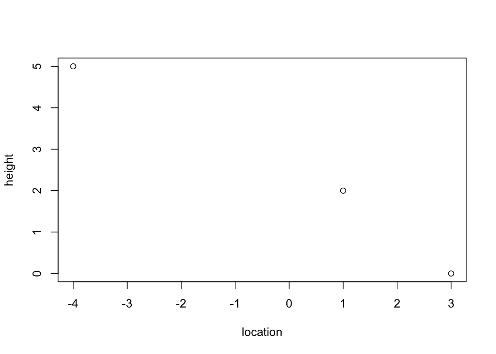
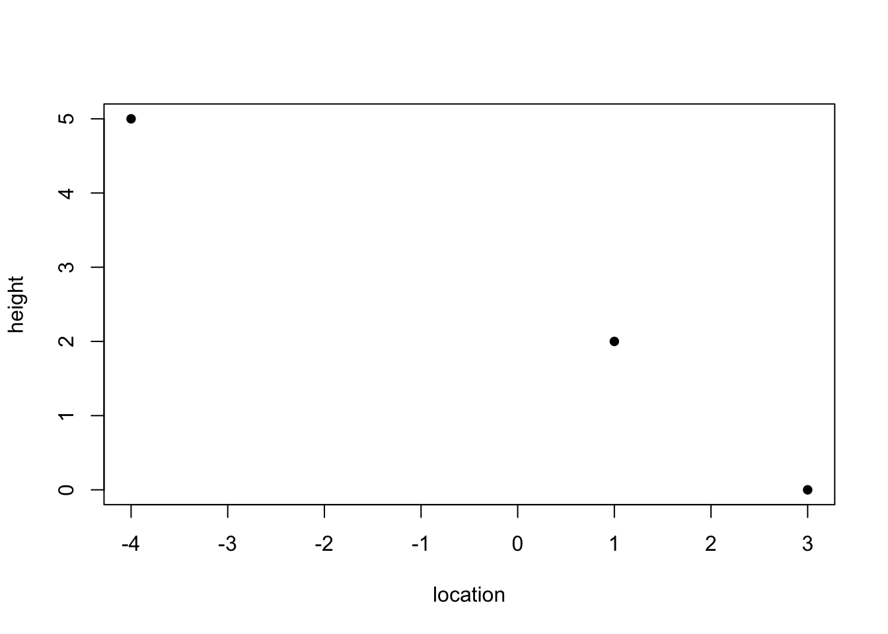
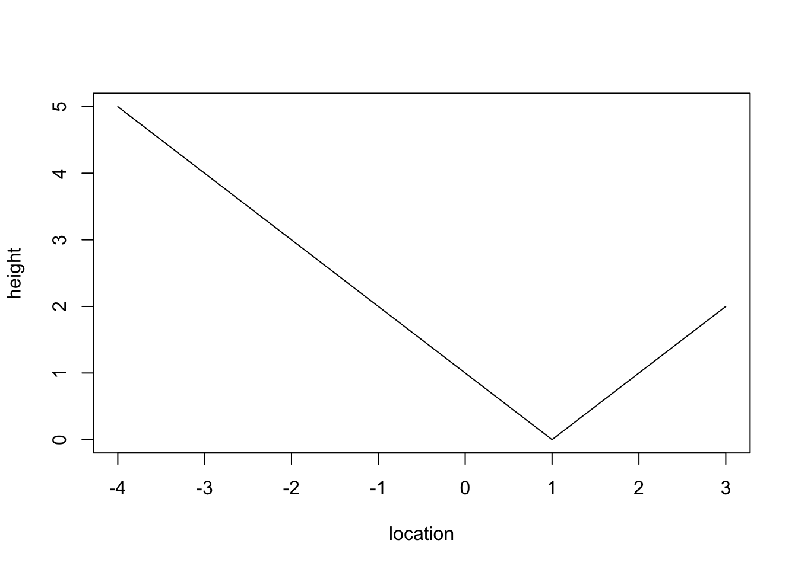
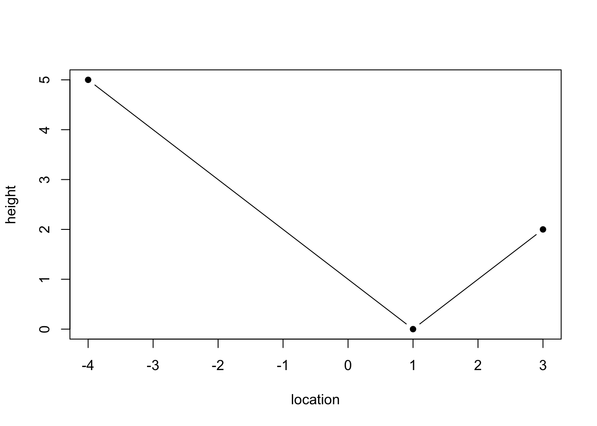

1 + 3[1] 4This Quarto document operates similar to a word document with extra capabilities.
To produce an html document with this work, click the “Render” button at the top. View the html document and compare it the .qmd file before proceeding.
There are two different forms you can edit this document with. “Source” uses traditional markdown display and can be helpful for advanced users wanting more flexibility. “Visual” is more user friendly so we recommend using it as the editor.
Below is a code chunk. It allows us to insert, display, and run R code in our document. To run a code chunk press the green arrow in the chunk. Try it out!!
1 + 3[1] 4Notice the output is printed below the chunk, with [1] signifying a line of output.
# Hashtags are used for comments in your code
# Comments do not get run
2 + 3[1] 54 / 3[1] 1.333333Try doing the following (you can use either the visual editor to help or the notes provided in lecture earlier today):
source editor how these are defined in the markdown syntax!w <- 0 # Stores the value 0 into the variable w
print(w) # Prints the value stored[1] 0x <- "a" # Stores the character/letter "a" into the variable x
x # Also prints the value stored[1] "a"Change the variable “age” to contain your actual age
age <- 26Run the following code to print your age to the console.
print(paste("My age is ", age))[1] "My age is 26"At this point we have made a change to this document. You should save your document frequently, and it is up to you how often you commit those changes to Git.
Let’s practice committing. Save this document now. In the Git pane commit the change you have made to this document with a meaningful commit message.
After you have committed, “pull” using the blue arrow and then “push” using the green arrow.
Now proceed on through the rest of this lab. Make sure to commit your changes occasionally.
The code below stores the vector containing values 1-5 into variable y.
y <- c(1, 2, 3, 4, 5)This prints the vector stored in variable y
y[1] 1 2 3 4 5Computes the length of the vector (i.e. number of elements stored)
length(y)[1] 5Another way to store vectors of consecutive numbers
z_vector <- 1:5
z_vector[1] 1 2 3 4 5Elements of a vector can be access by specifying its position in the vector.
y[1] # prints the first value stored in y[1] 1Change new_vector to contain a vector with the elements: 4, 6, 8, 10.
new_vector <- c(4, 6, 7, 10)Print the 3rd (not 1st) value stored in new_vector.
If statements only run the accompanying code if the condition is true
if (w == 0) {
print("w equals 0")
}[1] "w equals 0"If else statements provide different code to be run depending on the condition
if (w > 0) {
print("w is greater than 0")
} else {
print("w is less than 0")
}[1] "w is less than 0"Note “!=” means “does not equal”
if (age != 999) {
print("message 1")
} else {
print("message 2")
}[1] "message 1"Try it out:
Write an if statement to check if age is less than 21. If true, print the message “I am younger than 21!”. If false, print the message “I am 21 or over!”. Make sure to add an R code chunk here using the green +C button above.
You can also write if statements with multiple conditions.
if (z_vector[2] == 1) {
print("Stuff")
} else if (z_vector[2] == 2) {
print("Other stuff")
} else {
print("More stuff")
}[1] "Other stuff"For loops iterate over the accompanying code for a given sequence
for (iteration in y) {
print(iteration) # the value stored in iteration changes with each loop
}[1] 1
[1] 2
[1] 3
[1] 4
[1] 5The sequence to iterate over does not need to be defined outside of the loop
for (i in 3:5) {
print(i)
}[1] 3
[1] 4
[1] 5For loops can be helpful for accessing individual elements of a vector
for (i in 1:length(new_vector)) { # i will go from 1 to 5 (length of the vector)
print(
paste(
"The value stored in position", i, "of new_vector is:", new_vector[i]
)
)
}[1] "The value stored in position 1 of new_vector is: 4"
[1] "The value stored in position 2 of new_vector is: 6"
[1] "The value stored in position 3 of new_vector is: 7"
[1] "The value stored in position 4 of new_vector is: 10"paste() allows us to print what is stored in a variable. Here we used it within print().
Change the loop below to loop over the days of the week and print the day instead of the month.
for (month in c("Jan.", "Feb.", "Mar.", "Apr.", "May", "Jun.", "Jul.", "Aug.", "Sep.", "Oct.", "Nov.", "Dec.")) {
print(paste("The month is ", month))
}[1] "The month is Jan."
[1] "The month is Feb."
[1] "The month is Mar."
[1] "The month is Apr."
[1] "The month is May"
[1] "The month is Jun."
[1] "The month is Jul."
[1] "The month is Aug."
[1] "The month is Sep."
[1] "The month is Oct."
[1] "The month is Nov."
[1] "The month is Dec."At this point, we have quite a bit of changes again in the document. If you want to the extra practice with git to build your muscle memory, try committing, and pushing to Github again. Check your Github repo to see if it reflects the changes!!
We can define functions in R in this way:
print_name <- function(name){
print(paste("My name is:",name))
}
print_name("bianca")[1] "My name is: bianca"Try it ! Using print_name("your_name") should automatically print your name and let you change it quickly. However, this will not return an object. This means you cannot assign the output of the function to a variable. To do so, we need to use return at the end of the function. For example
compute_year_born <- function(cur_age, cur_year){
birth_year <- cur_year - cur_age
return(birth_year)
}This function takes two arguments, cur_age, cur_year and return the birth year as an integer.
You can use it to assigns to a variable a certain value (similar to what we did above, but using the function to return it instead of plugging it in yourself!)
my_birth_year <- compute_year_born(31,2025)
my_birth_year[1] 1994You will note that function does not take into account the fact someone might be born before or after the current date (so that the birth year might be different).
Do you think you can modify the above function to account for that? Hint: you might use an if statement as we saw above!! (There is many ways to do this! try out what makes the most sense to you and then compare with your classmates)
For a scatterplot we have to specify x and y axis values
plot(x = 1:3, y = c(5, 0, 2)) # plots the points (1, 5), (2, 0), (3, 2)
We can specify axis labels
plot(x = c(-4, 3, 1), y = c(5, 0, 2), xlab = "location", ylab = "height")
Make a plot with the following points (1, -3), (-2, 5), (4, 0), (5,1). You will have to add an R chunk to write your code in!!
(Add your code here)
You can change the style of your scatterplot using the argument pch. For instance, using my favorite style pch=16 :
plot(x = c(-4, 3, 1), y = c(5, 0, 2), xlab = "location", ylab = "height",pch=16)
Play around with changing the number of pch to see how the plot changes!
Now what if we want to connect the lines in the plot? Use the argument type="l"
plot(x = c(-4, 1, 3), y = c(5, 0, 2), xlab = "location", ylab = "height",pch=16,type="l")
If you want both the points and the line, use the argument type="b"
plot(x = c(-4, 1, 3), y = c(5, 0, 2), xlab = "location", ylab = "height",pch=16,type="b")
Feel free to try different types and see how they look !! (To see what’s available, remember to use ?plot to see what it is possible to do with the function)
If you finish the previous section, type ?plot to see what is available in terms of options. For instance, try to:
We are going to learn a lot more about plotting tomorrow. These are just some preliminary examples.
## Wrapping up
We have finished editing this lab now so save, commit, pull, push this document.
Render this document to html and commit, pull, push the html. (Recall, they are two different files!!)